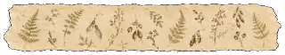

写真・文字・シール・手書きを自由に重ねて、自分だけのデジタルジャーナルを。
無料・アカウント登録なし

01
BEFORE OPENING
最初だけ、4つをさらっと見てね。
Safari / Chromeがおすすめ。
いつも同じ入口から開けるよ。
右上の白い「本を管理」から、ときどき保存。
本棚が見えないときも、保存したバックアップから戻せます。
※ X・LINEなどのアプリ内ブラウザでは、保存場所が別になることがあります。MEMORIAは無料・アカウント登録なしで使えます。
02
A PEEK INSIDE
ページを重ねるたび、あなたらしい一冊に。
本や写真は、お使いのブラウザの端末内に保存されます。ときどき、本棚のバックアップを。